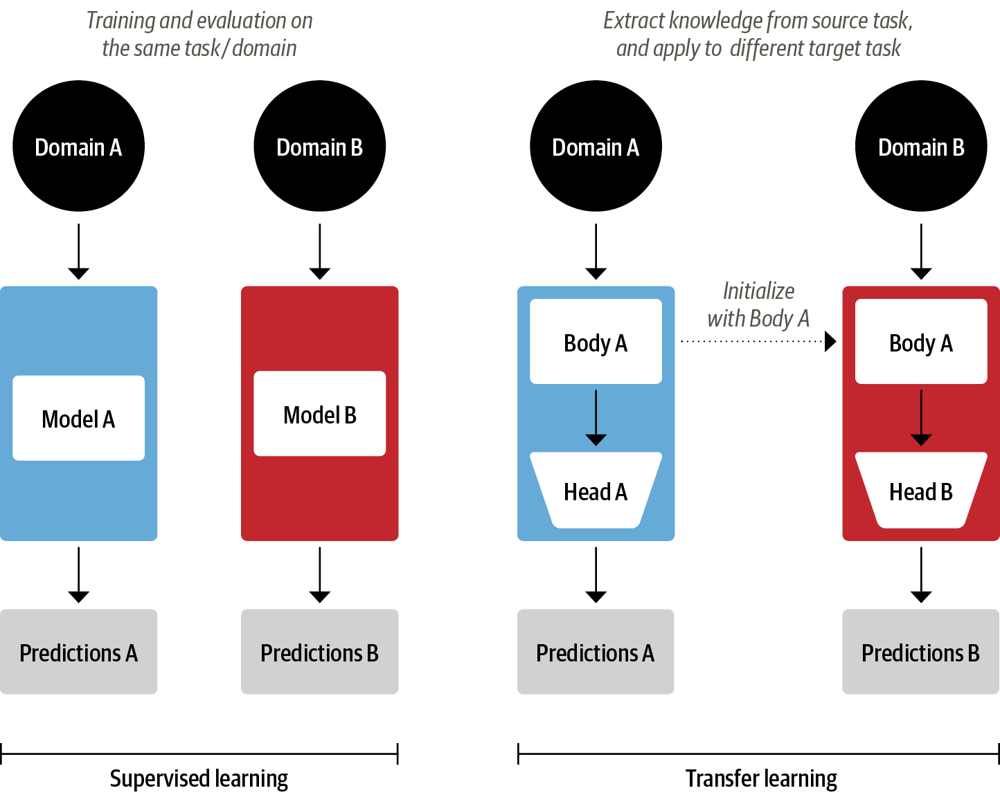
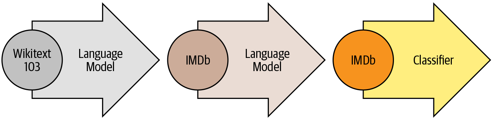
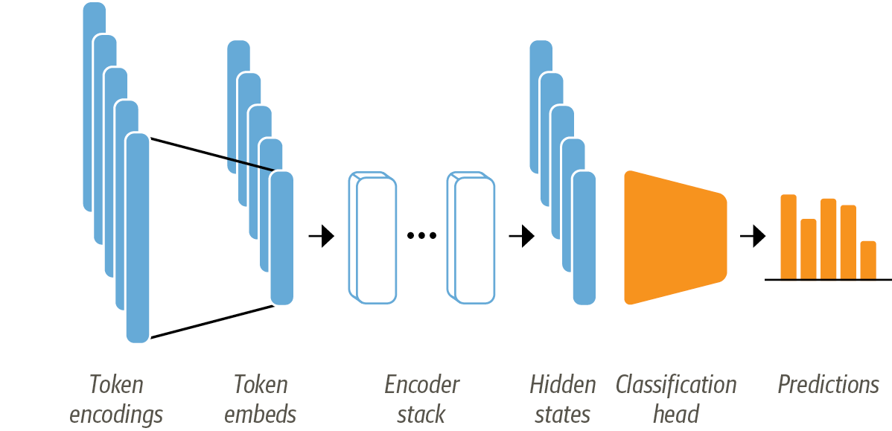
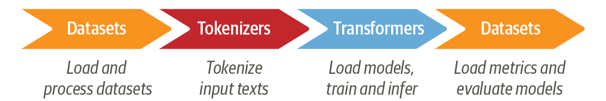
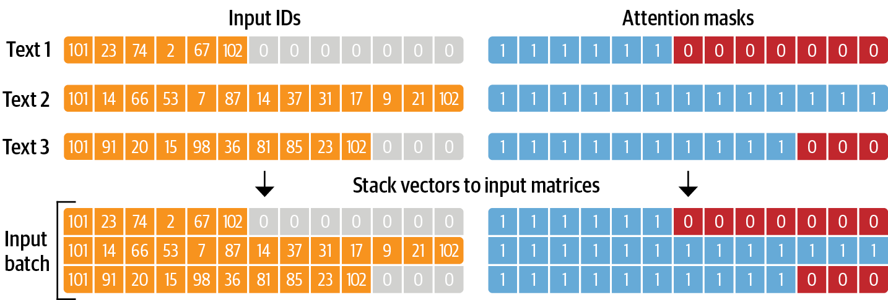
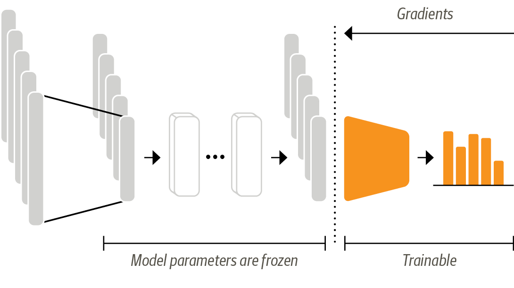
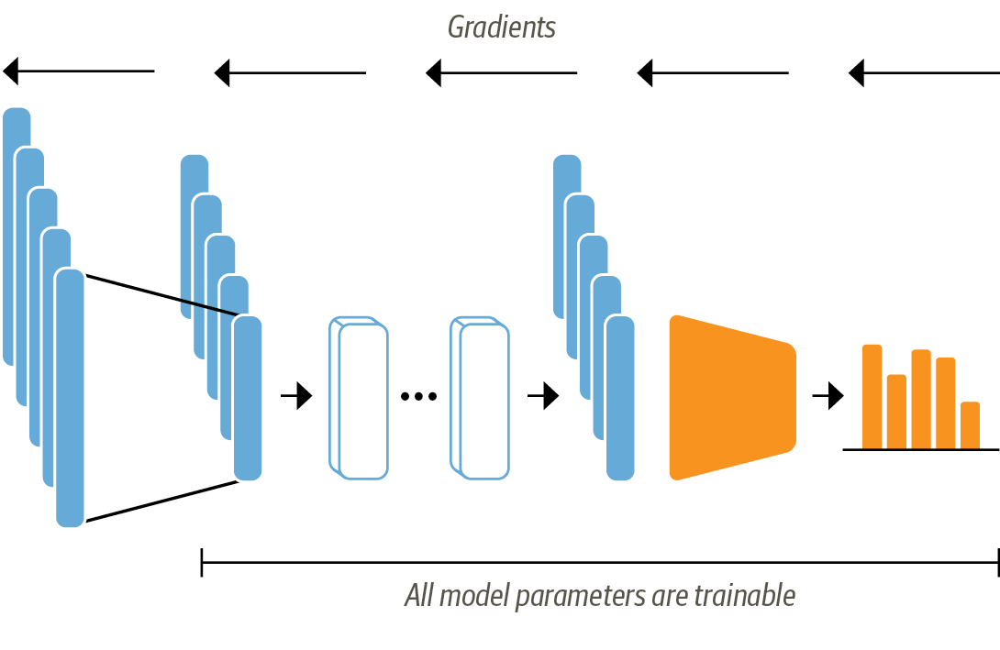

Text Classification
Topics: Text classification, sentiment analysis, feature extraction vs. fine-tuning, evaluation metrics
Project milestone: Classification Agent that labels sources by type and relevance; evaluate on 20+ sources
Contents (10 sections)
- What You'll Learn
- 1. What are Transformers?
- 2. Loading and Exploring the Dataset
- 3. Tokenization and Data Preparation
- 4. Feature Extraction from Pre-trained Models
- 5. Creating a Baseline Model with Logistic Regression
- 6. Fine-tuning a Transformer Model
- 7. Evaluating Model Performance
- 8. Deploying the Model to Hugging Face Hub
- 9. Next Steps and Conclusion
Build your first NLP model. Level: beginner · about 60 minutes · Hugging Face, PyTorch, Transformers, scikit-learn. The approach follows Tunstall, von Werra & Wolf, Natural Language Processing with Transformers, Chapter 2.
What You'll Learn
By the end of this tutorial you will be able to:
- Load and explore datasets from the Hugging Face Hub
- Tokenize and prepare text for a transformer
- Extract features from pre-trained models
- Build a simple baseline classifier
- Fine-tune a transformer model
- Deploy your model to the Hugging Face Hub
Goal: a working emotion classification model that identifies the emotion expressed in a piece of text.
Prerequisites: no prior knowledge of transformers is needed; basic Python and machine-learning familiarity helps.
1. What are Transformers?
Transformers are neural network architectures that changed NLP by using attention. Attention lets a model weigh the context of each word far more effectively than earlier approaches.
Key features
- Attention mechanism: the model focuses on the most relevant parts of the input.
- Pre-training and fine-tuning: the model first learns general language, then adapts to a specific task.
- Parallelization: the whole sequence is processed at once, unlike RNNs which go step by step.
- Transfer learning: knowledge learned from huge datasets carries over to your specific task.
Popular transformer models
- BERT — Bidirectional Encoder Representations from Transformers
- DistilBERT — a lighter, faster BERT variant with similar performance
- RoBERTa — a BERT variant with an optimized training recipe
- GPT models — Generative Pre-trained Transformers
The ideas behind this lesson
The key features above are stated in one line each. This part explains the theory the rest of the lesson relies on, before any code. Attention itself is the subject of Week 1.
Parallelization. An RNN reads a sentence one word at a time, and each step needs the result of the previous one, so the work is sequential however much hardware is available. A transformer has no such dependency: attention relates every token to every other token in one set of matrix operations, and the whole sequence is processed at once. Matrix operations are what GPUs do well. That is why training became fast enough to learn from enormous amounts of text, and why the training step of this lesson runs on a GPU.
Theory 1: encoder-only, decoder-only, and encoder–decoder
The original Transformer (2017) was built for translation and has two parts, an encoder and a decoder. Later models kept one part or both. Which parts a model keeps decides what it is good at.
What each part does
- The encoder reads. Its self-attention is bidirectional: every token attends to all the other tokens, to its left and to its right. Its output is one contextual vector per input token. An encoder produces no text. It produces a representation of the text it was given.
- The decoder writes. It produces the output one token at a time. Its self-attention is masked (also called causal): each position can attend only to the positions before it, because when text is being generated the later words do not exist yet. Its output is a probability distribution over the next token.
- Cross-attention connects them. In a model that has both parts, every decoder step also attends to the encoder's vectors. Each word the decoder writes can therefore consult the whole input.
| Family and examples | Parts | Pre-trained by |
|---|---|---|
| Encoder-only: BERT, DistilBERT, RoBERTa | Encoder | Predicting hidden (masked) words |
| Decoder-only: GPT family | Decoder | Predicting the next word |
| Encoder–decoder: the original Transformer, T5, BART | Both, joined by cross-attention | Producing an output text from an input text |
Why each application needs its part, and what it gets from it
Understanding a text: classification, named entity recognition. The answer is a label, not a text. What the task needs is the meaning of the whole input, and the meaning of a word often depends on what comes after it. In "He went to the bank to fish" and "He went to the bank to deposit money", the word bank is settled only by the words that follow. The encoder supplies exactly this: every token's vector is informed by both sides. No decoder is needed, because nothing is written. A small classification layer on top of the encoder is enough. What the task gets is the best representation for the least computation. What it gives up is the ability to generate text.
Generating a text: chat, completion, code. The output is open-ended text, written from left to right. The task needs a model that predicts the next word from the words so far, and the causal mask makes training match this situation: the model is never shown the word it is asked to predict. No separate encoder is needed, because the prompt and its continuation form one sequence, and the prompt is simply the beginning of the text. What the task gets is fluent generation, and efficient training, since every position in every sentence is a prediction exercise. What it gives up is the two-sided view: each token is represented using only what precedes it.
Turning one text into another: translation, summarization. The output is a new text whose words depend on the whole input, often in a different order. English says "the red car"; Arabic says "السيارة الحمراء", with the noun first. To write the first Arabic word, the model must already have read the last English word. The task needs both abilities. The encoder gives a complete, two-sided reading of the source. The decoder gives left-to-right writing of the target. Cross-attention lets each written word look back at the relevant source words. The price is two stacks of layers instead of one.
| Application | What it needs | Family that fits, and what it provides |
|---|---|---|
| Classification, NER | The meaning of the whole input | Encoder-only: two-sided context for every token |
| Text generation | The next word, given the words so far | Decoder-only: left-to-right prediction that matches how text is written |
| Translation, summarization | A full reading of the input, and a new text as output | Encoder–decoder: both, plus cross-attention between them |
Two remarks keep this picture honest. Large decoder-only models now also translate, summarize and classify, by treating every task as the continuation of a prompt. Encoder-only models remain the common choice for classification when the model must be small, fast and cheap to run.
In this lesson. Emotion classification means reading a complete tweet and assigning one label, so the lesson uses an encoder, DistilBERT. This is also why the vector of the first token, [CLS], can serve as a summary of the sentence: in an encoder that token has attended to every word.
Theory 2: transfer learning
The principle. Transfer learning means that knowledge gained on one task is reused on another, so that training does not start from randomly initialized weights. With transformers it is carried out in two stages.

Stage 1: pre-training. Pre-training is done once, by the model's creators, on a very large body of unlabeled text. BERT learns by masked-word prediction: some words of a sentence are hidden and the model must predict them. No human labels are needed, because the text supplies its own answers. The result is a model that represents general English well but performs no particular task.
Stage 2: adapting to a task. The pre-trained model is then trained on a small labeled dataset for one task. In this lesson that is 16,000 tweets labeled with six emotions.
This recipe became standard in NLP with ULMFiT (2018), which used three steps: pre-train a language model on general text, continue training it on text from the target domain, and then train the classifier. With BERT-style models the middle step is usually skipped, which leaves the two stages above.

Why it works. To predict hidden words well, a model has to learn grammar, word meanings and how context changes meaning. That knowledge is useful for almost any language task. Only the last step, deciding which emotion a sentence expresses, is specific to the task. The practical value is that a small dataset becomes sufficient: sixteen thousand tweets cannot teach a model English, but they can teach a model that already knows English what anger looks like.
The body and the head. A classifier built this way has two parts.
- The body is the pre-trained transformer. It comes first and turns text into vectors.
- The classification head is a small layer that comes last and turns those vectors into one score per class. It is specific to the task: its size is the number of classes (
num_labels=6here; a three-class task would need a different head). It did not exist during pre-training, so it always starts from random weights.

Two ways to adapt. The lesson uses both, in this order.
| Feature extraction | Fine-tuning | |
|---|---|---|
| Body weights | Frozen: not updated | Updated, slightly |
| Head | Trained | Trained |
| Cost | Low, no GPU needed | Higher, a GPU is needed in practice |
| Typical result | A reasonable baseline | Usually better |
| In this lesson | Sections 4 and 5 (logistic regression on the body's vectors) | Section 6 (the Trainer) |
In fine-tuning, all the weights are adjusted, but the body only slightly. This is why the learning rate is so small (2e-5): large steps would destroy what pre-training learned. In research papers, feature extraction with a linear classifier on top is also called linear probing.
When transfer works less well. Transfer depends on the pre-training text resembling the task text. A model pre-trained on English will do poorly on Arabic tweets; for those, start from a model pre-trained on Arabic or on many languages. The same applies to specialized fields such as medicine or law.
Theory 3: knowledge distillation
The problem it solves. Large models are accurate but slow and expensive to run, which matters on a phone, on a free cloud machine, or when serving many users. Distillation produces a smaller model that keeps most of the large model's ability.
Teacher and student. A large trained model, the teacher, is used to train a smaller model, the student. The student does not learn only from the data. It learns to imitate the teacher's outputs.
Hard labels and soft targets. In ordinary training, a model that predicts a hidden word is told only the one correct answer. For "I drank a cup of [MASK]" the target is coffee, and every other word is equally wrong. This is a hard label. The teacher knows more than that. It might give coffee a high probability, tea a lower one, water less, and car almost none. These probabilities are soft targets. They tell the student that tea is a sensible answer and car is not, which the hard label cannot express. Each training example therefore teaches the student something about many words at once.
Temperature. The teacher's probabilities for wrong answers are often very small. Dividing the scores by a temperature T greater than 1 before the softmax flattens the distribution, so that these small differences become large enough for the student to learn from.
What the student is trained on. The student's loss combines two terms: how far its distribution is from the teacher's soft targets, and how far it is from the hard label.
DistilBERT. DistilBERT is BERT distilled during pre-training. It has half of BERT's layers and started from BERT's own weights, taking every second layer. It was trained on three terms: matching the teacher's distribution, the usual masked-word loss, and keeping its hidden vectors aligned with the teacher's.
| BERT-base | DistilBERT | |
|---|---|---|
| Transformer layers | 12 | 6 |
| Parameters | about 110 million | about 66 million |
| Speed | baseline | about 60% faster |
| Language-understanding score | baseline | about 97% of BERT's (reported by its authors) |
The size of each vector is the same, 768, which is the feature size you will see in Section 4.
Distillation is not fine-tuning. The two answer different questions and are often used together, as in this lesson.
| Distillation | Fine-tuning | |
|---|---|---|
| Purpose | Make a model smaller and faster | Adapt a model to a task |
| Learns from | A teacher model's outputs | Labeled examples of the task |
| In this lesson | Already done for you: BERT was distilled into DistilBERT | You do it in Section 6 |
Check your understanding
1. Why is an encoder, and not a decoder, the natural choice for emotion classification?
Classification needs the meaning of the whole sentence, and an encoder gives every token a view of the full input, left and right. Nothing has to be generated, so a decoder is not needed.
2. Why does a decoder mask the words that come later?
When text is generated, later words do not exist yet. The mask makes training match that situation: the model is never shown the word it is asked to predict.
3. What does cross-attention give a translation model?
It lets each word the decoder writes consult the encoder's reading of the whole source sentence.
4. In fine-tuning, which weights start from random values, and which are updated?
Only the classification head starts from random values. All the weights are updated, the body as well as the head.
5. You change the task from six emotions to three sentiment classes. What can be reused?
The pre-trained body can be reused as it is. The head must be replaced by one with three outputs and trained again, because its size depends on the number of classes.
6. What does a student learn from soft targets that it cannot learn from a hard label?
Which wrong answers are nearly right. The hard label treats tea and car as equally wrong; the teacher's distribution shows that tea is plausible and car is not.
Setting up your environment
Required tools: Python 3.10+, PyTorch, the Hugging Face libraries, and scikit-learn for evaluation.
!pip install transformers[torch]
!pip install datasets
!pip install scikit-learn
!pip install huggingface_hub
!pip install pandas
!pip install matplotlib
!pip install torchTip: If installation fails, consult the library's installation guide. Google Colab is a good option because most of these libraries are pre-installed.
Mini-challenge: verify your setup
Import torch, transformers and datasets and print each version to confirm everything imports successfully.
▶ Try it examples run inside this page, in your web browser — good for quick experiments with plain Python, NumPy, pandas, scikit-learn and matplotlib. From here on the examples need more:
- Everything else → Google Colab. PyTorch, Transformers, LangChain and LangGraph need a full Python installation and large libraries, which a web page does not have. ▶ Run in Colab opens this week's notebook in Google Colab, at the cell that holds the example. The notebook contains all of the lesson's code in order, and its first cell installs what is missing. Sign in with a Google account and run the cells from the top, because later examples reuse earlier ones.
- Model training needs a GPU. In Colab choose Runtime → Change runtime type → T4 GPU before running the notebook. Without it, the training examples (▶ Train in Colab) take hours.
import torch
import transformers
import datasets
print(f"PyTorch version: {torch.__version__}")
print(f"Transformers version: {transformers.__version__}")
print(f"Datasets version: {datasets.__version__}")2. Loading and Exploring the Dataset
The Hugging Face Datasets library gives easy access to many public datasets. This tutorial uses the emotion dataset (dair-ai/emotion): English tweets labeled with one of six emotions.
The rest of the lesson follows the four stages below: load the data (Section 2), tokenize it (Section 3), load and train a model (Sections 4 to 6), and evaluate it (Section 7).

Loading the dataset
from datasets import load_dataset
emotions = load_dataset("dair-ai/emotion")
print(emotions)The dataset has train, validation and test splits. Each example has a text field and an integer label from 0 to 5.
Examining dataset structure
emotions["train"].features
emotions["train"].column_names
emotions["train"]["text"][:2]
emotions["train"]["label"][:2]Label names, in order: sadness (0), joy (1), love (2), anger (3), fear (4), surprise (5).
Converting to pandas
import pandas as pd
emotions.set_format(type="pandas")
df = emotions["train"][:]
def convert_label_int_2_string(row):
return emotions["train"].features["label"].int2str(row)
df["label_name"] = df["label"].apply(convert_label_int_2_string)
df.head()Visualizing the data
import matplotlib.pyplot as plt
df["label_name"].value_counts(ascending=True).plot.barh()
plt.title("Distribution of Emotions in Dataset")
plt.xlabel("Count")
plt.ylabel("Emotion")
plt.show()This chart reveals the class distribution and any class imbalance (joy and sadness dominate; surprise and love are rare).
Mini-challenge: class percentages
Compute the percentage of each emotion in the training set and identify the most and least common emotions. This tells you whether the model will need class-imbalance handling.
percentages = df["label_name"].value_counts(normalize=True) * 100
print(percentages)3. Tokenization and Data Preparation
Tokenization splits text into tokens and maps each token to a numeric ID so the model can process it.
This part follows "From Text to Tokens" in Chapter 2 of the textbook and uses its example sentence. It looks at the two extremes first, characters and words, and then at the compromise that transformers use.
Character tokenization
The simplest scheme gives the model one character at a time. A Python string can be turned into a list of its characters in one line:
text = "Tokenizing text is a core task of NLP."
tokenized_text = list(text)
print(tokenized_text)The result is a list of 38 characters, spaces and the full stop included. A model cannot work with letters, so each distinct character is given a number. This step is called numericalization:
token2idx = {ch: idx for idx, ch in enumerate(sorted(set(tokenized_text)))}
print(token2idx)
# {' ': 0, '.': 1, 'L': 2, 'N': 3, 'P': 4, 'T': 5, 'a': 6, 'c': 7, 'e': 8, 'f': 9, 'g': 10,
# 'i': 11, 'k': 12, 'n': 13, 'o': 14, 'r': 15, 's': 16, 't': 17, 'x': 18, 'z': 19}This is the vocabulary: 20 distinct characters, each with its own integer. With it, the whole text becomes a list of integers, the input_ids:
input_ids = [token2idx[token] for token in tokenized_text]
print(input_ids)
# [5, 14, 12, 8, 13, 11, 19, 11, 13, 10, 0, 17, 8, 18, 17, 0, 11, 16, 0, 6, 0, 7,
# 14, 15, 8, 0, 17, 6, 16, 12, 0, 14, 9, 0, 3, 2, 4, 1]From IDs to one-hot vectors. The IDs have one drawback: they look like quantities. z is 19 and a is 6, but z is not "more" than a, and adding two IDs gives the ID of an unrelated character. The textbook illustrates the problem, and its usual solution, with a small table of names:
import pandas as pd
categorical_df = pd.DataFrame({"Name": ["Bumblebee", "Optimus Prime", "Megatron"], "Label ID": [0, 1, 2]})
print(categorical_df)
print(pd.get_dummies(categorical_df["Name"], dtype=int))The label IDs suggest an order among the three names that does not exist. get_dummies removes it by giving every name its own column, with a 1 in that column and 0 everywhere else. Each row is then a one-hot vector. The same is done with the characters, using PyTorch:
import torch
import torch.nn.functional as F
input_ids = torch.tensor(input_ids)
one_hot_encodings = F.one_hot(input_ids, num_classes=len(token2idx))
print(one_hot_encodings.shape) # torch.Size([38, 20])
print(f"Token: {tokenized_text[0]}")
print(f"Tensor index: {input_ids[0]}")
print(f"One-hot: {one_hot_encodings[0]}")There are 38 vectors, one per character, and each has 20 positions, one per entry of the vocabulary. The first character is T, whose ID is 5, so its vector has a single 1 at position 5. Always pass num_classes: without it, PyTorch sizes the vectors from the largest ID that happens to occur, which can be smaller than the vocabulary.
What character tokenization costs. It never meets an unknown word and it copes with misspellings, but it throws away the structure of the text. The model would have to learn from data alone that certain letters form words, which takes a great deal of data, memory and computation. For that reason it is rarely used.
Word tokenization
The opposite extreme keeps whole words. The simplest version splits the text at spaces:
tokenized_text = text.split()
print(tokenized_text)
# ['Tokenizing', 'text', 'is', 'a', 'core', 'task', 'of', 'NLP.']Each word could now be numbered as the characters were, and the model no longer has to discover words for itself. Two problems appear at once:
- Punctuation is not handled.
NLP.with its full stop is one token, different fromNLP. - The vocabulary explodes. Every inflected form, spelling variant and typing error is a new word, so the vocabulary of a real corpus can reach millions of entries. The first layer of a network needs one row of weights per entry: with one million words and vectors of one thousand numbers, that layer alone has one billion weights.
The usual remedy is to keep only the most frequent words, for example the top 100,000, and to map every other word to one shared token for "unknown", written [UNK]. The price is that the model learns nothing about any word that falls outside the list.
Subword tokenization
Subword tokenization takes the useful half of each extreme. Frequent words stay whole, which keeps sequences short. Rare words are split into smaller known pieces, so nothing is ever unknown and misspellings can still be represented. The pieces are not designed by hand: they are learned from the pre-training corpus by a statistical algorithm. BERT and DistilBERT use the one called WordPiece.
The clearest way to understand it is to watch it work. AutoTokenizer loads the tokenizer that belongs to a pre-trained model, given the model's name on the Hub:
from transformers import AutoTokenizer
model_ckp = "distilbert-base-uncased"
tokenizer = AutoTokenizer.from_pretrained(model_ckp)
encoded_text = tokenizer(text)
print(encoded_text)
# {'input_ids': [101, 19204, 6026, 3793, 2003, 1037, 4563, 4708, 1997, 17953, 2361, 1012, 102],
# 'attention_mask': [1, 1, 1, 1, 1, 1, 1, 1, 1, 1, 1, 1, 1]}The first run shows progress bars while the tokenizer's files are downloaded from the Hub; later runs read them from a cache on disk. As in the character example, the text has become a list of integers in input_ids (the attention_mask is explained below). The IDs can be turned back into tokens to see what the tokenizer did:
tokens = tokenizer.convert_ids_to_tokens(encoded_text.input_ids)
print(tokens)
# ['[CLS]', 'token', '##izing', 'text', 'is', 'a', 'core', 'task', 'of', 'nl', '##p', '.', '[SEP]']
print(tokenizer.convert_tokens_to_string(tokens))
# [CLS] tokenizing text is a core task of nlp. [SEP]Three things can be read from this output:
- Special tokens were added.
[CLS]marks the start of the sequence and[SEP]its end. Their names differ from model to model. - Everything was lowercased. That is a property of this checkpoint, whose name ends in "uncased".
- Two words were split. "Tokenizing" became
tokenand##izing, and "NLP" becamenland##p, because neither is common enough to be in the vocabulary as a whole. The prefix##means "this piece continues the previous one", which is howconvert_tokens_to_stringknows where to join them again.
Tokenizer properties
print(tokenizer.vocab_size) # 30522: the number of tokens in the vocabulary
print(tokenizer.model_max_length) # 512: the longest sequence the model accepts
print(tokenizer.model_input_names) # ['input_ids', 'attention_mask']: what the model expectsAlways use the tokenizer the model was trained with. Each token ID is the number of a row in the model's embedding table. A different tokenizer assigns different numbers to the same words, so to the model it is as if the vocabulary had been shuffled.
Tokenizing the entire dataset
emotions.reset_format() # undo the pandas format set earlier
def tokenize(batch):
return tokenizer(batch["text"], padding=True, truncation=True)
emotion_encoded = emotions.map(tokenize, batched=True, batch_size=None)
print(emotion_encoded.column_names)Move the pointer over the underlined parts of the code to see what each one does.
To see what tokenize returns, apply it to the first two tweets:
print(tokenize(emotions["train"][:2]))Move the pointer over the underlined parts of the code to see what each one does.
The first tweet is shorter than the second, so its input_ids end in a run of zeros that brings it to the same length. Zero is the ID of the padding token, one of five special tokens in this vocabulary:
| Special token | [PAD] |
[UNK] |
[CLS] |
[SEP] |
[MASK] |
|---|---|---|---|---|---|
| ID | 0 | 100 | 101 | 102 | 103 |
padding=Truepads to the longest sequence in the batch (padding="max_length"pads to the model's max length instead). Padding adds special tokens so sequences in a batch have equal length.truncation=Trueshortens sequences that exceed the model's maximum length. This prevents errors but may cut information.batched=Trueprocesses the data in batches;batch_size=Nonetreats the whole split as one batch.- New columns
input_idsandattention_maskare added alongside the originals.
The attention mask tells the model which positions are real tokens (1) and which are padding (0), so that padding does not influence the result:

Mini-challenge: tokenize a custom sentence
Tokenize "I am feeling both happy and sad at the same time.", print the IDs and tokens, and identify which words split into subword pieces. This is a useful debugging skill.
sentence = "I am feeling both happy and sad at the same time."
encoded = tokenizer(sentence)
print(encoded.input_ids)
print(tokenizer.convert_ids_to_tokens(encoded.input_ids))4. Feature Extraction from Pre-trained Models
Instead of fine-tuning, you can use a pre-trained model as a frozen feature extractor and train a simpler classifier on its outputs. This is faster and less resource-intensive.

Loading the pre-trained model
from transformers import AutoModel
import torch
device = torch.device("cuda" if torch.cuda.is_available() else "cpu")
model_chk = "distilbert-base-uncased"
model = AutoModel.from_pretrained(model_chk).to(device) # base model, no classification headHidden states. The model produces a contextual vector (hidden state) for every token. The final layer carries the most task-relevant information. The first token, [CLS], is often used as a summary of the whole sentence, so we take its final-layer representation.
Feature extraction function
def extract_hidden_states(batch):
inputs = {k: v.to(device) for k, v in batch.items() if k in tokenizer.model_input_names}
with torch.no_grad():
last_hidden_state = model(**inputs).last_hidden_state
return {"hidden_state": last_hidden_state[:, 0].cpu().numpy()}Processing the dataset
emotion_encoded.set_format("torch", columns=["input_ids", "attention_mask", "label"])
emotions_hidden = emotion_encoded.map(extract_hidden_states, batched=True)
import numpy as np
X_train = np.array(emotions_hidden["train"]["hidden_state"])
X_valid = np.array(emotions_hidden["validation"]["hidden_state"])
y_train = np.array(emotions_hidden["train"]["label"])
y_valid = np.array(emotions_hidden["validation"]["label"])
print(f"Training features shape: {X_train.shape}")
print(f"Validation features shape: {X_valid.shape}")Benefits: faster than fine-tuning, less compute, still uses pre-trained knowledge, works well on small datasets. Limitations: features are not tuned to the task, may miss task-specific nuances, and the performance ceiling is usually lower than fine-tuning.
Mini-challenge: inspect the features
print(f"Feature vector size: {X_train.shape[1]}")
labels = emotions["train"].features["label"].names
for i, emotion in enumerate(labels):
mean_vec = X_train[y_train == i].mean(axis=0)
print(f"{emotion}: {mean_vec[:5]} ...")
# Optional visualization
# !pip install umap-learn
# import umap
# reducer = umap.UMAP()
# X_2d = reducer.fit_transform(X_train)
# plt.scatter(X_2d[:, 0], X_2d[:, 1], c=y_train, cmap="viridis", s=2)
# plt.colorbar()
# plt.show()The visualization shows whether the [CLS] features already separate the emotions.
5. Creating a Baseline Model with Logistic Regression
Always set a performance benchmark before fine-tuning.
Dummy classifier
from sklearn.dummy import DummyClassifier
dummy_clf = DummyClassifier(strategy="most_frequent")
dummy_clf.fit(X_train, y_train)
dummy_score = dummy_clf.score(X_valid, y_valid)
print(f"Dummy classifier accuracy: {dummy_score:.4f}")Logistic regression
from sklearn.linear_model import LogisticRegression
lr_clf = LogisticRegression(max_iter=3000)
lr_clf.fit(X_train, y_train)
lr_score = lr_clf.score(X_valid, y_valid)
print(f"Logistic regression accuracy: {lr_score:.4f}")
print(f"Improvement over dummy: {lr_score - dummy_score:.4f}")Confusion matrix
from sklearn.metrics import ConfusionMatrixDisplay, confusion_matrix
def plot_confusion_matrix(y_preds, y_true, labels):
cm = confusion_matrix(y_true, y_preds, normalize="true")
fig, ax = plt.subplots(figsize=(10, 10))
disp = ConfusionMatrixDisplay(confusion_matrix=cm, display_labels=labels)
disp.plot(cmap="Blues", values_format=".2f", ax=ax, colorbar=False)
plt.title("Normalized confusion matrix")
plt.show()
y_preds = lr_clf.predict(X_valid)
labels = emotions["train"].features["label"].names
plot_confusion_matrix(y_preds, y_valid, labels)The matrix shows which emotions are confused with one another.
Additional metrics
from sklearn.metrics import classification_report
print(classification_report(y_valid, y_preds, target_names=labels))Why build a baseline? It sets minimum expectations, is quick to build, reveals which classes are easy or hard, and gives a reference point. A suspiciously strong baseline may indicate dataset issues; similar scores across models point to feature limits; class imbalance usually shows up here.
Mini-challenge: random forest
from sklearn.ensemble import RandomForestClassifier
rf_clf = RandomForestClassifier(n_estimators=100, random_state=42)
rf_clf.fit(X_train, y_train)
rf_score = rf_clf.score(X_valid, y_valid)
print(f"Random forest accuracy: {rf_score:.4f} (logistic regression: {lr_score:.4f})")
rf_preds = rf_clf.predict(X_valid)
rf_report = classification_report(y_valid, rf_preds, target_names=labels)
print(rf_report)Which emotions does the random forest predict better?
6. Fine-tuning a Transformer Model
Fine-tuning updates all of the model's weights on the task, usually giving better results than frozen features.

Loading a classification model
from transformers import AutoModelForSequenceClassification
num_labels = 6
id2label = {i: name for i, name in enumerate(labels)}
label2id = {name: i for i, name in enumerate(labels)}
model = (AutoModelForSequenceClassification
.from_pretrained(model_chk, num_labels=num_labels,
id2label=id2label, label2id=label2id)
.to(device))Same DistilBERT base as before, now with a randomly initialized classification head on top. Passing id2label/label2id stores the emotion names in the model config, so the deployed model reports joy rather than LABEL_1.
Evaluation metrics
from sklearn.metrics import accuracy_score, f1_score
def compute_metrics(pred):
labels = pred.label_ids
preds = pred.predictions.argmax(-1)
f1 = f1_score(labels, preds, average="weighted")
acc = accuracy_score(labels, preds)
return {"accuracy": acc, "f1": f1}Before you train: switch on the GPU
The three training examples that follow (Setting up the Trainer, Training the model and the tuning mini-challenge) need a GPU. If you have run this week's Colab notebook without one so far, this is the point to switch it on. Nothing here replaces the lesson code. Each note is an extra cell that you add to the Colab notebook, either as a setup step before training or as a fix when a particular message appears.
How to add a cell in Colab. Move the mouse between two cells and click + Code, paste the snippet, and run it with Shift+Enter. At the top means above the first code cell of the notebook. Above the Trainer cell means directly above the cell that starts with from transformers import Trainer, TrainingArguments.
Setup steps, in this order
1. Open the notebook. Press ▶ Train in Colab on the example below. It opens this week's notebook, which contains every example of the lesson in order.
2. Turn on the GPU. In the Colab menu choose Runtime → Change runtime type → T4 GPU → Save. This is a menu setting, not code. Changing it restarts the session, so do it before you run anything.
3. Check that the GPU is visible. Add this cell at the top and run it:
import torch
if torch.cuda.is_available():
print("GPU ready:", torch.cuda.get_device_name(0))
else:
print("No GPU found. Runtime → Change runtime type → T4 GPU, then run this cell again.")What it does: it asks PyTorch whether a GPU is attached to the session. No separate command is needed to make the code use the GPU. The lesson already selects it with device = torch.device("cuda" if torch.cuda.is_available() else "cpu"), and the Trainer picks it up automatically. This cell only confirms that step 2 worked. Without a GPU the code still runs, without any error, but training takes hours.
4. Run the notebook from the top down to the Trainer cell. Click the Trainer cell, then choose Runtime → Run before. The Trainer reuses model, tokenizer, emotion_encoded and compute_metrics from the earlier sections, so they must exist in the Colab session. The first code cell of the notebook installs the libraries that Colab does not include (datasets, gradio).
5. Log in to Hugging Face. Add this cell above the Trainer cell and run it:
from huggingface_hub import notebook_login
notebook_login()What it does: it stores your access token in the session so that the Trainer can upload the model. It is required here because TrainingArguments sets push_to_hub=True, and the Trainer creates your model repository as soon as it is built. In the notebook the login cell appears later, in Section 8, so in Colab you run it early. Create a token with write access at https://huggingface.co/settings/tokens.
If you see one of these messages
ModuleNotFoundError: No module named 'datasets': the install cell at the top of the notebook was not run. Run it, or add%pip install -q datasetsin a cell at the top.TypeError: ... got an unexpected keyword argument 'eval_strategy'(or'processing_class'): the Transformers version in Colab is older than 4.46. Add%pip install -q -U "transformers[torch]"in a cell at the top and run it, choose Runtime → Restart session, then run the notebook from the top again.NameError: name 'emotion_encoded' is not defined(ormodel,tokenizer,compute_metrics): the earlier cells were not run in this session. Colab forgets all variables after a restart or a disconnect. Repeat step 4.- An error that mentions a token, a login or
401 Unauthorizedwhen the Trainer cell runs: you are not logged in. Do step 5, then run the Trainer cell again. - Colab asks for a
wandbAPI key when training starts: older Transformers versions try to log to Weights & Biases, which this course does not use. Type3(do not visualize my results) and press Enter. CUDA out of memory: the GPU ran out of memory. This is the one case where you change the lesson code: setbatch_size = 32in the Trainer cell, choose Runtime → Restart session, and run from the top again.- Training shows an estimated time of hours: the GPU is off. Repeat steps 2 and 3.
Optional
- See the GPU and its memory. Run
!nvidia-smiin a new cell anywhere in the notebook. - Keep the trained model. Colab deletes its files when the session ends, so finish Section 8 (
trainer.push_to_hub(...)) before you close the tab. In any later session, the Using your model cell with your own username downloads the model from the Hub, and prediction does not need a GPU.
Setting up the Trainer
from transformers import Trainer, TrainingArguments
batch_size = 64
logging_steps = len(emotion_encoded["train"]) // batch_size
model_name = f"{model_chk}-finetuned-emotion"
training_args = TrainingArguments(
output_dir=model_name,
num_train_epochs=2,
learning_rate=2e-5,
per_device_train_batch_size=batch_size,
per_device_eval_batch_size=batch_size,
weight_decay=0.01,
eval_strategy="epoch",
disable_tqdm=False,
logging_steps=logging_steps,
push_to_hub=True,
log_level="error",
)
trainer = Trainer(
model=model,
args=training_args,
compute_metrics=compute_metrics,
train_dataset=emotion_encoded["train"],
eval_dataset=emotion_encoded["validation"],
processing_class=tokenizer,
)| Argument | Meaning |
|---|---|
output_dir |
Where checkpoints and logs are saved |
num_train_epochs |
Number of passes over the training data |
learning_rate |
Step size for the optimizer (2e-5 is a common choice for BERT-style models) |
per_device_train_batch_size |
Examples per device per step |
weight_decay |
L2 regularization strength |
eval_strategy |
When to evaluate: "epoch" or "steps" |
push_to_hub |
Upload the model to the Hugging Face Hub during training |
Version note: Transformers releases before 4.46 used the older names
evaluation_strategyandTrainer(tokenizer=...); the current names areeval_strategyandprocessing_class=....push_to_hub=Truerequires that you are logged in (see Section 8).
Training the model
trainer.train()Training runs for the configured epochs, reports metrics after each epoch, saves checkpoints and shows a progress bar.
Mini-challenge: tuning experiments
# 1. Try a different learning rate
training_args.learning_rate = 5e-5
# 2. Try a different scheduler
training_args.lr_scheduler_type = "cosine"
# 3. More epochs with early stopping
from transformers import EarlyStoppingCallback
training_args.num_train_epochs = 5
training_args.save_strategy = "epoch" # must match eval_strategy when loading the best model
training_args.load_best_model_at_end = True
training_args.metric_for_best_model = "f1" # required by EarlyStoppingCallback
trainer.add_callback(EarlyStoppingCallback(early_stopping_patience=2))
# Re-run trainer.train() after each change to see its effect7. Evaluating Model Performance
Evaluating on the validation set
validation_results = trainer.evaluate()
print(f"Validation accuracy: {validation_results['eval_accuracy']:.4f}")
print(f"Validation F1: {validation_results['eval_f1']:.4f}")
print(f"Improvement over logistic regression: {validation_results['eval_accuracy'] - lr_score:.4f}")Confusion matrix
preds_output = trainer.predict(emotion_encoded["validation"])
y_preds = preds_output.predictions.argmax(-1)
y_valid = preds_output.label_ids
plot_confusion_matrix(y_preds, y_valid, labels)Detailed classification report
print(classification_report(y_valid, y_preds, target_names=labels))Look for classes with low precision or recall.
Error analysis
validation_texts = emotions["validation"]["text"]
validation_labels = emotions["validation"]["label"]
errors = []
for i, (pred, true) in enumerate(zip(y_preds, y_valid)):
if pred != true:
errors.append({
"text": validation_texts[i],
"true": labels[true],
"predicted": labels[pred],
})
for i, err in enumerate(errors[:5]):
print(f"{i+1}. Text: {err['text']}")
print(f" True: {err['true']}, Predicted: {err['predicted']}\n")Metric definitions: accuracy = fraction correct; precision = of predicted positives, how many are right; recall = of the actual positives, how many were found; F1 = harmonic mean of precision and recall.
Common error patterns: confusion between similar emotions (love vs joy), ambiguous text expressing several emotions, sarcasm and figurative language, cultural or contextual references.
Mini-challenge: predict on custom text
def predict_emotion(text):
inputs = tokenizer(text, return_tensors="pt").to(device)
with torch.no_grad():
outputs = model(**inputs)
probs = torch.nn.functional.softmax(outputs.logits, dim=-1)
predicted_class = torch.argmax(probs, dim=-1).item()
confidence = probs[0][predicted_class].item()
return {
"emotion": labels[predicted_class],
"confidence": confidence,
"all_probs": {labels[i]: probs[0][i].item() for i in range(len(labels))},
}
test_texts = [
"I can't believe I aced my exam!",
"I miss my family so much right now.",
"That driver just cut me off! So rude!",
]
for text in test_texts:
result = predict_emotion(text)
print(f"Text: {text}")
print(f"Predicted: {result['emotion']} (confidence: {result['confidence']:.4f})")
print(f"All probabilities: {result['all_probs']}\n")8. Deploying the Model to Hugging Face Hub
Setting up your Hugging Face account
from huggingface_hub import notebook_login
notebook_login()Create an access token at https://huggingface.co/settings/tokens. In a script (not a notebook) use hf auth login in the terminal instead (huggingface-cli login in older versions of huggingface_hub).
Pushing the model to the Hub
trainer.push_to_hub(commit_message="Training completed!")This uploads the model weights, tokenizer configuration, model configuration and a README model card. The model appears at https://huggingface.co/YOUR_USERNAME/distilbert-base-uncased-finetuned-emotion.
Creating a model card
model_card = """
# Emotion Classification Model
This model classifies text into six emotions: sadness, joy, love, anger, fear, and surprise.
## Model Description
- Architecture: DistilBERT (distilbert-base-uncased)
- Fine-tuned on the DAIR.AI Emotion dataset
- Training accuracy: {train_acc:.4f}
- Validation accuracy: {val_acc:.4f}
- F1 score: {f1:.4f}
## Intended Usage
Sentiment analysis and emotion detection in English text.
## Limitations
- English only
- May struggle with sarcasm and ambiguous emotions
- May underperform on very short texts
## Training Procedure
- 2 epochs
- Learning rate: 2e-5
- Batch size: 64
""".format(
train_acc=0.92, # replace with your actual training accuracy
val_acc=validation_results["eval_accuracy"],
f1=validation_results["eval_f1"],
)
# from huggingface_hub import ModelCard
# ModelCard(model_card).push_to_hub("YOUR_USERNAME/distilbert-base-uncased-finetuned-emotion",
# commit_message="Update model card")Using your model
from transformers import pipeline
model_name = "YOUR_USERNAME/distilbert-base-uncased-finetuned-emotion" # replace YOUR_USERNAME
classifier = pipeline("text-classification", model=model_name)
result = classifier("I'm so excited to see this working!")
print(result) # e.g. [{'label': 'joy', 'score': 0.9874}]Hub benefits: easy sharing, version control, automatic model cards, browser inference widgets, community discussions, download statistics, Spaces for demos, and framework integrations.
Mini-challenge (optional): Gradio demo
!pip install gradio
import gradio as gr
def predict(text):
results = classifier(text, top_k=None) # scores for all six emotions
return {r["label"]: r["score"] for r in results}
demo = gr.Interface(
fn=predict,
inputs=gr.Textbox(placeholder="Enter text here..."),
outputs=gr.Label(num_top_classes=6),
title="Emotion Classifier",
description="Classifies text into six emotions: sadness, joy, love, anger, fear, surprise.",
)
demo.launch()The demo can be hosted permanently on Hugging Face Spaces.
9. Next Steps and Conclusion
What you learned: loading datasets, tokenizing, extracting features, building scikit-learn baselines, fine-tuning for classification, evaluating with metrics and plots, and deploying to the Hub.
Improving your model
- Different architectures: RoBERTa, BERT, or others
- Hyperparameter tuning: grid or random search over learning rate, batch size, epochs
- Data augmentation: synonym replacement, random insertion, swapping
- Class imbalance: weighted loss, oversampling, synthetic examples
Advanced topics: prompt engineering, multi-task learning, few-shot learning, model distillation.
Project ideas: multi-label emotion detection, emotion-intensity prediction, a sentiment dashboard for social media or customer feedback, cross-lingual emotion detection.
Resources
- Hugging Face Transformers docs: https://huggingface.co/docs/transformers/index
- Hugging Face Datasets docs: https://huggingface.co/docs/datasets/index
- scikit-learn docs: https://scikit-learn.org/stable/documentation.html
- Hugging Face NLP Course: https://huggingface.co/learn/nlp-course/chapter1/1
- DeepLearning.AI short courses: https://www.deeplearning.ai/short-courses/
- fast.ai: https://www.fast.ai/
- Hugging Face Forums: https://discuss.huggingface.co/
- r/MachineLearning: https://www.reddit.com/r/MachineLearning/
- Stack Overflow (huggingface-transformers tag): https://stackoverflow.com/questions/tagged/huggingface-transformers
Congratulations on building your first text classification model. Back to course: https://albanna-tutorials.com/cs/index.html · All courses: https://albanna-tutorials.com/courses.html
Try it yourself
▶ Try it runs an example in the editor panel, inside your browser — change the code and press Ctrl+Enter to run it again. Examples that use PyTorch, Transformers, LangChain or an API cannot run in a browser: press ▶ Run in Colab to open them in this week's Google Colab notebook, ready to run.
Run in your browser
Self-contained versions of this week's mechanisms, written with NumPy, scikit-learn or plain Python so they run here.
from sklearn.feature_extraction.text import TfidfVectorizer
from sklearn.linear_model import LogisticRegression
from sklearn.metrics import classification_report
train_texts = [
"I love this course", "What a wonderful lecture", "The project was fun and useful",
"Great explanation, very clear", "I enjoyed the lab today", "This tutorial is excellent",
"I hate waiting for the model to train", "The lecture was boring", "This bug is terrible",
"I am disappointed with the results", "The exam was awful", "Nothing works, very frustrating",
]
train_labels = ["pos"] * 6 + ["neg"] * 6
test_texts = ["The lab was clear and fun", "The results are terrible", "I love the project", "Boring and frustrating exam"]
test_labels = ["pos", "neg", "pos", "neg"]
vec = TfidfVectorizer()
X_train = vec.fit_transform(train_texts)
clf = LogisticRegression().fit(X_train, train_labels)
pred = clf.predict(vec.transform(test_texts))
for t, p in zip(test_texts, pred):
print(f"{p:>3} <- {t}")
print()
print(classification_report(test_labels, pred, zero_division=0))from sklearn.metrics import precision_score, recall_score, f1_score
y_true = [1, 1, 1, 1, 0, 0, 0, 0, 0, 0]
y_pred = [1, 1, 1, 0, 1, 0, 0, 0, 0, 0]
tp = sum(t == 1 and p == 1 for t, p in zip(y_true, y_pred))
fp = sum(t == 0 and p == 1 for t, p in zip(y_true, y_pred))
fn = sum(t == 1 and p == 0 for t, p in zip(y_true, y_pred))
precision = tp / (tp + fp)
recall = tp / (tp + fn)
f1 = 2 * precision * recall / (precision + recall)
print(f"TP={tp} FP={fp} FN={fn}")
print(f"by hand: precision={precision:.3f} recall={recall:.3f} F1={f1:.3f}")
print(f"scikit-learn: precision={precision_score(y_true, y_pred):.3f} "
f"recall={recall_score(y_true, y_pred):.3f} F1={f1_score(y_true, y_pred):.3f}")Test code for the course environment
# 1. Dataset + tokenizer sanity check (no training)
from datasets import load_dataset
from transformers import AutoTokenizer
emotions = load_dataset("dair-ai/emotion")
labels = emotions["train"].features["label"].names
print(emotions)
print(labels)
tokenizer = AutoTokenizer.from_pretrained("distilbert-base-uncased")
enc = tokenizer("I am feeling both happy and sad at the same time.")
print(enc.input_ids)
print(tokenizer.convert_ids_to_tokens(enc.input_ids))# 2. [CLS] feature extraction + logistic-regression baseline on a small subset
import numpy as np, torch
from transformers import AutoModel
from sklearn.linear_model import LogisticRegression
from sklearn.dummy import DummyClassifier
device = torch.device("cuda" if torch.cuda.is_available() else "cpu")
model = AutoModel.from_pretrained("distilbert-base-uncased").to(device).eval()
def cls_features(texts, bs=32):
feats = []
for i in range(0, len(texts), bs):
batch = tokenizer(texts[i:i+bs], padding=True, truncation=True, return_tensors="pt").to(device)
with torch.no_grad():
feats.append(model(**batch).last_hidden_state[:, 0].cpu().numpy())
return np.vstack(feats)
train = emotions["train"].shuffle(seed=0).select(range(1000))
valid = emotions["validation"].select(range(300))
X_train, y_train = cls_features(train["text"]), np.array(train["label"])
X_valid, y_valid = cls_features(valid["text"]), np.array(valid["label"])
print("feature shape:", X_train.shape)
dummy = DummyClassifier(strategy="most_frequent").fit(X_train, y_train)
lr = LogisticRegression(max_iter=3000).fit(X_train, y_train)
print(f"dummy: {dummy.score(X_valid, y_valid):.3f} logistic regression: {lr.score(X_valid, y_valid):.3f}")# 3. Quick fine-tune on a subset (1 epoch) and evaluate
from transformers import AutoModelForSequenceClassification, Trainer, TrainingArguments
from sklearn.metrics import accuracy_score, f1_score
def tokenize(batch):
return tokenizer(batch["text"], padding=True, truncation=True)
small = emotions["train"].shuffle(seed=0).select(range(2000)).map(tokenize, batched=True)
small_val = emotions["validation"].select(range(500)).map(tokenize, batched=True)
def compute_metrics(pred):
preds = pred.predictions.argmax(-1)
return {"accuracy": accuracy_score(pred.label_ids, preds),
"f1": f1_score(pred.label_ids, preds, average="weighted")}
clf = AutoModelForSequenceClassification.from_pretrained("distilbert-base-uncased", num_labels=6).to(device)
args = TrainingArguments(output_dir="distilbert-emotion-test", num_train_epochs=1, learning_rate=2e-5,
per_device_train_batch_size=32, per_device_eval_batch_size=32,
weight_decay=0.01, eval_strategy="epoch", report_to="none", log_level="error")
trainer = Trainer(model=clf, args=args, compute_metrics=compute_metrics,
train_dataset=small, eval_dataset=small_val, processing_class=tokenizer)
trainer.train()
print(trainer.evaluate())# 4. Predict emotion with confidence from the fine-tuned model
def predict_emotion(text):
inputs = tokenizer(text, return_tensors="pt").to(device)
with torch.no_grad():
probs = torch.softmax(clf(**inputs).logits, dim=-1)[0]
idx = int(probs.argmax())
return labels[idx], float(probs[idx]), {l: round(float(p), 3) for l, p in zip(labels, probs)}
for t in ["I can't believe I aced my exam!",
"I miss my family so much right now.",
"That driver just cut me off! So rude!"]:
print(t, "->", predict_emotion(t))